在线作业一 • 技能节报名小程序
-
1.1 技能节报名Gui小程序
前往提交
完成方式：在线编辑 总分：100 分 参与人数：31 人 平均分：91.8 分 最高分：100 分
使用图形化界面设计技能节报名功能如下：
1、选手报名
2、加分
3、查分
4、排序
在线作业二 • 开发小游戏
-
2.1(一) 自选项目类的结构设计
前往提交 -
2.1(二) 打字母小游戏完整代码
前往提交 -
2.1(三) 绘制打字母游戏中字母的类图
前往提交 -
2.2 制作一个数字时钟
前往提交 -
2.3 画字母
前往提交
完成方式：在线编辑 总分：100 分 参与人数：68 人 平均分：92.9 分 最高分：100 分
绘制类图和流程图，编写基本的需求文档
本次作业需要大家分析打字母小游戏的全过程，思考要设计哪些类，这些类是什么结构，类中的方法有哪些？
完成方式：在线编辑 总分：100 分 参与人数：73 人 平均分：98.2 分 最高分：100 分
1、分析游戏需求，确定有哪几类关键对象？
分析一下整个玩游戏的过程。确定有如下几个对象类型：
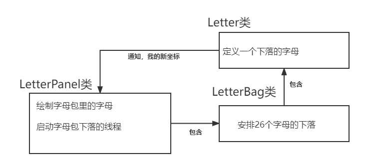
2、分析游戏需求，确定这些类型对象的属性和方法？
在Letter类中：
1、属性都是和单个字母相关的一些数据和对象
2、方法都是和一个字母的活动轨迹相关的行为，例如：
move确定一个字母移动一次要做什么
resize确定当屏幕的尺寸被调整一个字母要做什么改变
start用来启动一个字母的下落分析一下整个玩游戏的过程。确定有如下几个对象类型
具体类图设计如下所示：
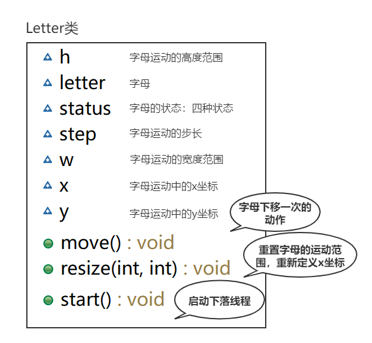
在LetterBag类中：
1、这个类的主要责任是管理要下落的26个字母，所以他是一个集合
2、提供的方法，用来处理26个字母的动作，例如：
falling确定一次下移，字母包需要放一个字母出来
两个hasxxx方法为falling服务，用来查询字母包中下落和准备好的字母
resize用来处理屏幕尺寸如果调整之后，26个字母要共同做什么调整
具体类图设计如下所示：
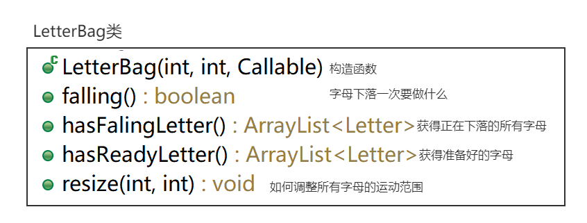
在LetterPanel类中：
1、Callable是回调类，沟通字母和面板
2、其他属性和字母面板的状态控制有关
3、hit用来处理如果用户敲击了一个字母，字母包如何判断是否加分
4、paintCompment主要是绘制字母
5、start用来启动线程，每隔一段时间启动新的字母下落
具体类图设计如下所示：
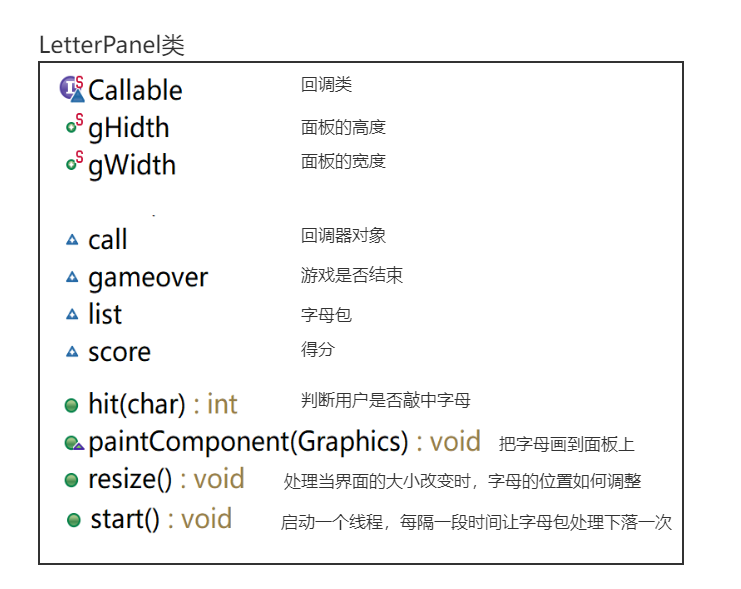
3、分析类中核心方法的业务流程
Letter类中的核心方法有move、resize和start
具体的业务流程如下图所示：
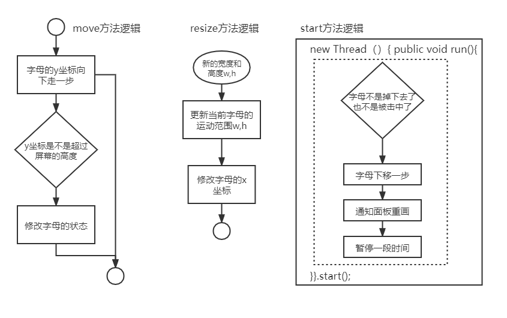
LetterBag类中的核心方法有falling、resize和hasxxx等方法。
具体的业务流程如下图所示：
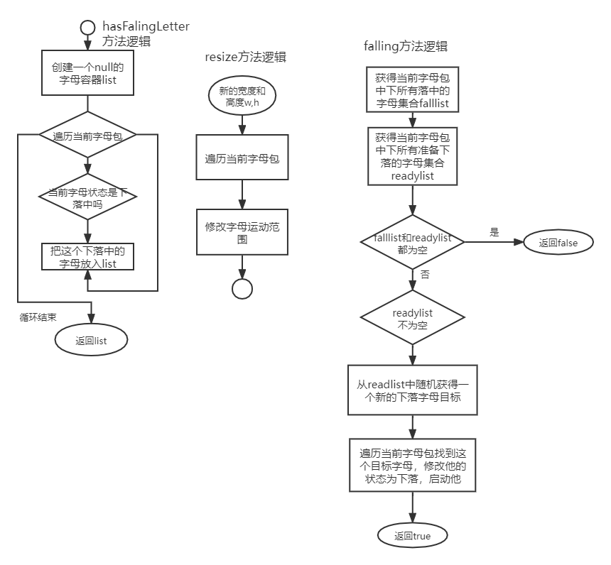
LetterPanel类中的核心方法有paintComponent、hit和start。
具体的业务流程如下图所示：
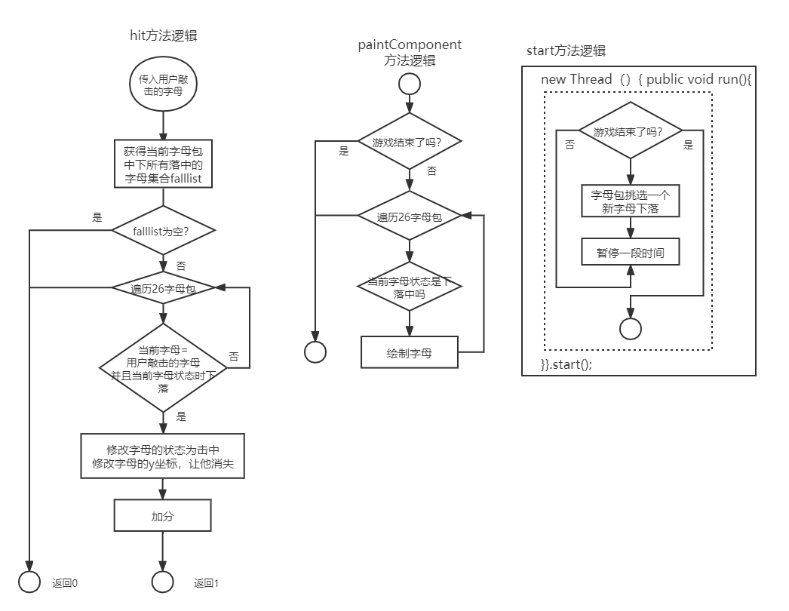
4、游戏开发与调试
根据上面的类的设计图纸，以及具体的业务逻辑分析，我们可以逐个的把类设计实现，最终完成游戏的开发，并调试结果。
完成方式：在线编辑 总分：100 分 参与人数：43 人 平均分：84.1 分 最高分：100 分
分析字母对象有哪些相关的属性和行为（方法）
完成方式：在线编辑 总分：100 分 参与人数：64 人 平均分：98.7 分 最高分：100 分
参照下图制作一个数字时钟

完成方式：在线编辑 总分：100 分 参与人数：74 人 平均分：99.2 分 最高分：100 分
参照下图完成画字母小游戏
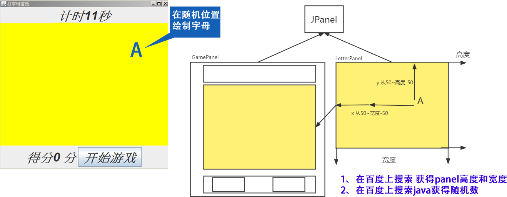
在线作业三 • 开发天气预报小程序
-
3.1 解析区号归属地
前往提交
完成方式：在线编辑 总分：100 分 参与人数：67 人 平均分：97 分 最高分：100 分
参照下图完成区号查询归属地的效果
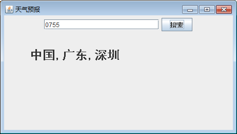
在线作业四 • 开发通讯录管理系统
-
4.1 实现通讯录管理的界面
前往提交
完成方式：在线编辑 总分：100 分 参与人数：69 人 平均分：96.8 分 最高分：100 分
参照下图完成通讯录管理的界面的开发
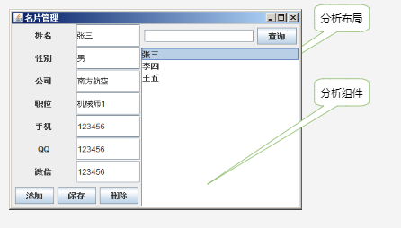
在线作业五 • 综合作业
-
5.1 实现通讯录管理的界面
前往提交 -
5.2 jdbc实现登录注册（使用db类简化流程）
前往提交
完成方式：在线编辑 总分：100 分 参与人数：61 人 平均分：73.2 分 最高分：100 分
按照如下步骤完成系统设计：
1、在数据库创建person表，拥有sid、公司名、电话、qq、微信、性别、职务、姓名等字段
2、创建java工程，导入jdbc驱动 把DB放入工程
3、创建personInfo类，代表一个通讯录中的联系人，是一个实体类
4、创建persons类 ，这是一个业务逻辑类，包含要操作数据库的所有业务方法
5、创建界面PersonPanel类，解决界面问题，处理事件，与用户互动
具体类图设计如下：
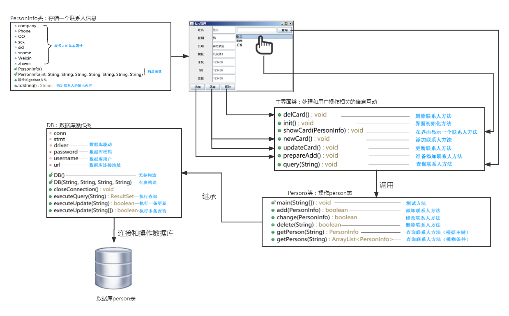
完成方式：在线编辑 总分：100 分 参与人数：68 人 平均分：94.7 分 最高分：100 分
这个任务需要实现如下几个步骤：
1、建立数据库和数据表 UserTable
2、创建UserInfo类 ，该类的属性和数据表中的字段一一对应，余下的get/set,constructor,toString自动生成
3、创建Users类，包含login方法（该方法参数吗？返回什么？）、register(该方法需要一个UserInfo对象作为参数，这个参数包含需要注册的用户全部信息)
4、创建测试类，实现登录和注册